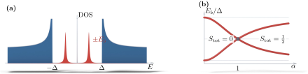
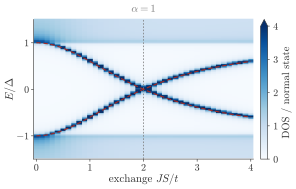

Page 10 of 15 of this session
9.7 Impurities as diagnostics II, magnetic impurities in a superconductor
What does one impurity do to a superconductor, which has a gap and no Fermi surface? We will now see that a non-magnetic impurity changes almost nothing, while a magnetic one binds a state inside the gap, at the energy (9.10). This energy crosses zero at \(\alpha=1\), and there the fermion parity of the ground state changes.
\[E(\mathbf k) = \pm\sqrt{\varepsilon(\mathbf k)^2 + |\Delta(\mathbf k)|^2}. \tag{5.9}\]
These are the quasiparticle energies of the Bogoliubov-de Gennes Hamiltonian of Section 5.8. Here \(\varepsilon(\mathbf k)\) is the band measured from the Fermi level and \(\Delta(\mathbf k)\) is the pairing. For a uniform \(\Delta\) there is no state with \(|E|<|\Delta|\), and this gap is where a bound state can appear.
We described superconductors in Session 5 with the Bogoliubov-de Gennes Hamiltonian of Section 5.8. They behave in a completely different way under a local perturbation, because for single-particle excitations a superconductor is an insulator in the bulk. There is a finite gap \(\Delta\), so there is no Fermi surface that can give oscillations of the Friedel type. The interesting physics is instead the difference between magnetic and non-magnetic impurities.
Let us remember that an s-wave Cooper pair binds one spin-up electron and one spin-down electron. A non-magnetic impurity, which is an ordinary local potential, does not distinguish spin up from spin down. So it does not break time-reversal symmetry, and it cannot lower the energy needed to break any specific Cooper pair. In practice, the density of states of a conventional s-wave superconductor is almost the same with and without a non-magnetic impurity, including the gap. Panel (a) of Figure 9.3 shows the two spectra on top of each other.
A magnetic impurity is completely different. It couples with strength \(J\) to the local spin, it distinguishes up from down, and so it does break time-reversal symmetry. This lowers the energy needed to break one specific Cooper pair and gives a real bound state inside the gap. In the approximation of a classical spin, this is the Yu-Shiba-Rusinov problem.
With \(\alpha \equiv \pi \nu_0 J S\), where \(\nu_0\) is the density of states of the normal state at the Fermi level and \(S\) is the impurity spin, the energy of the bound state in the gap is
\[E_b(J) = \Delta\, \frac{1-\alpha^2}{1+\alpha^2}. \tag{9.10}\]
Here \(\nu_0\) is counted per spin, and \(JS\) is the exchange energy on the impurity site, \(+JS\) for one spin and \(-JS\) for the other. The bound state starts at the gap edge for \(\alpha=0\) and crosses zero energy at \(\alpha=1\). This crossing is a change of the ground state, and not only a level that moves.
Equation (9.10) gives the curve of panel (b) of Figure 9.3, as a function of \(J\). At \(J=0\) (\(\alpha=0\)), \(E_b = \Delta\), which is at the gap edge, meaning that there is no real bound state yet. As \(J\) increases, \(\alpha\) grows and \(E_b\) moves down through the gap. At \(\alpha = 1\), which is \(\pi\nu_0 J S = 1\), the state crosses zero energy, and for \(\alpha>1\) the numerator of (9.10) becomes negative, so the bound state appears again on the other side of zero. This crossing is a real quantum phase transition, where the fermion parity of the electronic ground state changes. Below it the electronic ground state is even, with total electron spin \(S_{\rm tot}=0\), where every Cooper pair is intact and the impurity spin is not screened. Above it the electronic ground state has \(S_{\rm tot}=1/2\), since one quasiparticle is bound to the impurity and partially screens its spin. So a superconductor with a single magnetic impurity that we can tune is a minimal, exactly solvable model of a quantum phase transition, which is driven only by a local perturbation. Both parts of this picture are drawn in Figure 9.3. It shows the in-gap states that a magnetic impurity adds to a BCS spectrum that is otherwise unchanged, and the path that (9.10) follows across the gap as \(\alpha\) grows.

The same path can be computed on a lattice. In Schematic 9.12 we show the density of states on the site of one magnetic impurity and on the two sites next to it on one side, in an infinite superconducting chain, against the exchange. At half filling the bound state follows (9.10) as it moves through the gap.

g5_ysr_chain.py
h.add_onsite(1.8) and with a smaller broadening. The color is the density of states in units of its value in the normal state, clipped at \(4\). At half filling \(\nu_0=1/(2\pi t)\) per spin, so \(\alpha=JS/2t\), and the red dashed lines are \(\pm E_b\) of (9.10). The two dark lines inside the gap leave the gap edges as \(JS\) grows. From \(JS=0.5t\) on, where they are apart from the coherence peaks, they follow the dashed lines to \(0.01\Delta\), and they meet at zero energy at \(JS\approx2t\), which is \(\alpha=1\) in (9.10). The level of the lattice crosses zero at \(JS=\sqrt{4t^2+\Delta^2}=2.01t\), which the grid of \(0.1t\) in \(JS\) does not resolve. Look at the dark lines, and note that the density of states shows \(+E_b\) and \(-E_b\) together, so it does not show on which side of zero the bound state is.An iron atom in a superconductor is a real case of the classical spin of (9.10). The arXiv abstract of this article describes a localized classical spin of an iron atom immersed in a superconducting condensate. In addition to the Shiba bound state on top of the impurity, the measurement shows a star-shaped pattern that extends as far as \(12\) nm from the impurity. This large extent is related, in a non-trivial way, to the superconducting coherence length. The arXiv abstract does not name the probe or the superconductor. Our reading is that a map in real space of a bound state is what scanning tunneling spectroscopy gives.
A magnetic impurity in an s-wave superconductor binds a state at
\[E_b = \Delta\,\frac{1-\alpha^2}{1+\alpha^2}.\]
Here \(\alpha=\pi\nu_0JS\) is the dimensionless exchange. What is \(E_b\) at \(\alpha=0.5\), in units of \(\Delta\)?
Show the answers
- A. ✗ False
This is false. At \(\alpha=0.5\) the expression \(1-\alpha^2\) gives \(0.75\), but the full formula gives \(0.6\). The wrong form also fails at \(\alpha=2\), where it gives \(-3\Delta\), which is outside the gap.
- B. ✓ True
This is true. With \(\alpha^2=0.25\) the energy is \(0.75/1.25=0.6\). The formula stays between \(-\Delta\) and \(\Delta\) for every \(\alpha\), for example it gives \(-0.6\Delta\) at \(\alpha=2\).
- C. ✗ False
This is false. The bound state reaches zero only when \(1-\alpha^2=0\), so at \(\alpha=1\). At \(\alpha=0.5\) the numerator is \(0.75\), and the energy is \(0.6\Delta\).
The exchange is increased until \(\alpha\) is slightly larger than one. What changes in the electronic ground state?
Show the answers
- A. ✗ False
This is false. For \(\alpha=1.2\) the energy is \(-0.44/2.44\,\Delta\approx-0.18\Delta\), which is negative. The state is now cheaper to fill, so the ground state is not the same.
- B. ✗ False
This is false. The bulk gap stays \(\Delta\) for every \(\alpha\). At \(\alpha=1.2\) the bound state sits at \(-0.18\Delta\), inside the gap, and the continuum at \(\pm\Delta\) has not moved.
- C. ✓ True
This is true. At \(\alpha=1\) the energy crosses zero, and for \(\alpha=1.2\) it is \(-0.18\Delta\), so occupying it lowers the energy. One quasiparticle is bound, which changes the parity and gives spin \(1/2\).
A magnetic impurity in an s-wave superconductor has the dimensionless exchange \(\alpha=\pi\nu_0JS\). Its bound state stays inside the gap, \(|E_b|\leq\Delta\), and crosses zero at \(\alpha=1\). Which formula gives this energy?
Show the answers
- A. ✗ False
This is false. It crosses zero at \(\alpha=1\), but it leaves the gap for \(\alpha>\sqrt2\). At \(\alpha=2\) it gives \(-3\Delta\), which is outside the gap.
- B. ✗ False
This is false. It stays inside the gap, but it is positive for every \(\alpha\). At \(\alpha=1\) it gives \(0.5\Delta\), and not zero.
- C. ✓ True
This is true. The numerator vanishes at \(\alpha=1\), and \(|1-\alpha^2|\leq1+\alpha^2\) for every \(\alpha\), so the state never leaves the gap. At \(\alpha=2\) it gives \(-0.6\Delta\).
A half-filled chain with \(\Delta=0.2t\), where \(\alpha=JS/2t\), gives its bound state within \(0.01\Delta\) of this formula for \(JS\) up to \(4t\).
Use (9.10) to find the value of \(\alpha\) where the bound state sits at half the gap, \(E_b=\Delta/2\). Then show that \(\alpha\) and \(1/\alpha\) give bound states at opposite energies, \(E_b(1/\alpha)=-E_b(\alpha)\).
Solution
We set \((1-\alpha^2)/(1+\alpha^2)=1/2\). This gives \(2-2\alpha^2=1+\alpha^2\), so \(\alpha^2=1/3\) and
\[\alpha=\frac{1}{\sqrt3}\approx0.58.\]
For the second part we replace \(\alpha\) by \(1/\alpha\) and multiply the numerator and the denominator by \(\alpha^2\),
\[E_b(1/\alpha)=\Delta\,\frac{1-\alpha^{-2}}{1+\alpha^{-2}}=\Delta\,\frac{\alpha^2-1}{\alpha^2+1}=-E_b(\alpha).\]
So \(\alpha=1/\sqrt3\) and \(\alpha=\sqrt3\) give \(+\Delta/2\) and \(-\Delta/2\), and the crossing at \(\alpha=1\) is the point that this symmetry maps onto itself. The density of states has its peaks at \(+E_b\) and \(-E_b\) together, so the energy of the peaks alone does not tell whether an impurity is below or above the crossing.
Try it. Run the cell and follow the bright line inside the gap as \(J\) grows. Find the value of \(J\) where it crosses zero energy. Then change h.add_onsite(1.8) to another value and run it again. The crossing moves, since \(\alpha=\pi\nu_0JS\) depends on the density of states at the Fermi level.
Notebook check-in: session9.ipynb, “Magnetic impurities in a conventional superconductor” (Core) and “Single magnetic impurity in a superconductor” (Challenge)
Build a 1D superconducting chain with a magnetic impurity with an exchange \(J\) that you can change, and follow the energy of the in-gap state as in (9.10). Check the change of sign at the crossing. Check also that a non-magnetic impurity, where you set \(J=0\) and change only the local potential, leaves the gap edges almost unchanged, as the qualitative argument above predicts.